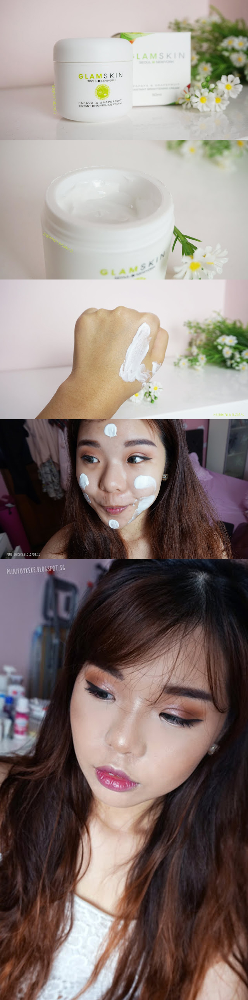

Hey ya'll! Today's review will be another product which was sent to me by CHARIS~ #CHARIS #Charisceleb If you haven't heard about CHARIS yet, they are a platform which sells mainly Korean Skincare and Makeup Products. This platform reaches out internationally to all y'all Korean loving junkies out there. So today's review will on the Glamskin Papaya and Grapefruit Brightening Cream. Which most people would just refer to as a instant whitening cream. Since I have always struggled with dull skin I'm quite excited to try this product out and see how it performs. And just a spoiler, I love this product. blog to continue...